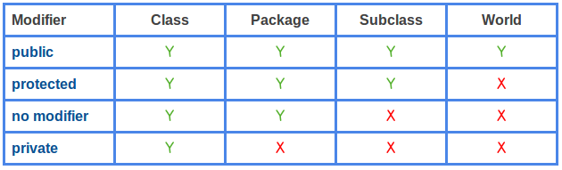

INTRO TO JAVA
Java is called a compiled language, but it is technically a little bit compiled and a little bit interpreted. Usually, the programmer writes Java source code, which is compiled to class files. These class files are in byte code, and can be interpreted or compiled by machine (depending on implementation). Compiling makes things faster and helps with error checking.
Java is an object oriented language; as you write in Java, keep in mind the importance of writing classes that can easily interact with other classes through their methods and variables. At least one of the classes in a Java program must contain a method called main. This main method is called in order to run the program.
Primitives in Java: byte, short, int, long, float, double, boolean, char; default values are 0. References in java: pointers to objects in memory; default value is null.
Java is also pass-by-value; this means when a function is called, its parameters are copies of the original arguments it was called with. This means that even references to objects are copied.
Some things you’ll see in the code...
MODIFIERS:
- Access- Control Modifiers
These are not assigned to classes, but the constructors/methods/fields within the classes. It controls how visible these constructors/methods/fields are to other objects.
- Non-Access Modifiers
static declares that the member belongs to the class, not each instance of the class. It is analagous to how Python has class variables (static) vs instance variables (non-static). If you alter a static member, all instances are affected. If someone says you're making a non-static reference to a method, it means you're calling that method using an instance of the class, not using the class itself. Here's an example: Say we have a class called Worker, with the variable wage. If we want to implement Worker in a capitalist environment, we'd leave the wage variable non-static, so that each worker owns their own wage. If a Worker earns money, they add it to their own wage. If we want to implemnt Worker in a socialist environment, we'd want to declare wage static, and thus shared by all instances of Worker. So, any time a worker makes money, they pool it into the wage shared by all workers. For more on when to use static methods and variables (and when not to), see here
final allows you to assign a value to a variable only once, essentially fixing the variable's value. This value can also be a reference; for example, if I initialize a final array, I can still change the contents of the array. What is finalized is that the variable will point to that array and only that array.
A final class cannot be subclassed.
A final method cannot be overridden by subclasses.
A final variable can only be initialized once.
***Subclassing means to define a new class that has the properties of an old class, with some changes.
abstract methods are declared, but not implemented. They're kind of like a placeholder, waiting for a programmer to fill in their purpose. An abstract class is just a class that contains one or more abstract methods. Generally speaking, the purpose of an abstract class is to provide a skeleton. This skeleton may have some concrete methods already, but its abstract methods still need to be filled in by subclasses. Like interfaces, abstract classes are helpful when you have classes that may do similar things in very different ways. If you’re curious, here’s a good explanation of when to use abstract classes or interfaces, as well as some examples (There's also a few shorter examples in the Interfaces explanation below)
Abstract class can not be instantiated directly but can be extended by other class.
SOME JAVA JARGON
- Interfaces
From Java for Dummies: "An interface in Java is similar to a class, but the body of an interface can include only abstract methods and final static variables. A class implements an interface by providing code for each method declared by the interface. Those are the rules for a Java interface." Interfaces are similar to abstract classes, but they cannot have ANY concrete methods at all. There are also other differences in how they should be used:
"Abstract classes are used for Modelling a class hierarchy of similar looking classes (For example Animal can be abstract class and Human , Lion, Tiger can be concrete derived classes)
Interface is used for Communication between 2 similar / non similar classes which does not care about type of the class implementing Interface(e.g. Height can be interface property and it can be implemented by Human , Building , Tree. It does not matter if you can eat , you can swim you can die or anything.. it matters only a thing that you need to have Height (implementation in you class))." (Source)
"More than one interface can be implemented on a class. A class can only derive from a single abstract base class. This allows for polymorphic hierarchy using interfaces, but not abstract base classes. This also allows for a pseudo-multi-inheritance using interfaces." (Source) - Polymorphism
Polymorphism is the capability of a method to do different things based on the object that it is acting upon. Interfaces are useful to achieve this! It sounds a little confusing, but let’s think about the two ways to achieve polymorphism:
(1) Method overloading:
Imagine you have a class Arithmetic
class Arithmetic
{
void multiply (int a, int b)
{
System.out.println ("result: " + (a * b));
}
void multiply (String a, String b)
{
System.out.println ("You can’t multiply strings!");
}
}
Notice how the method multiply is defined twice. Thus, multiply can accept integer arguments or String arguments. This method behaves differently depending on what type of objects are passed in! This is also called compile time polymorphism
(2) Method overriding:
Imagine you have the following parent and child classes
//The parent class
public class Bird
{
public void fly() //Base class method
{
System.out.println ("I'm flying!");
}
}
//The child class
public class Penguin extends Bird
{
public void fly() //Derived Class method
{
System.out.println ("I prefer the ocean...");
}
}
Basically, the child class’ method behaves differently than the parent class’ method. This is called run time polymorphism. A nice thing about polymorphism that relates to method overriding is that, if an argument in a method requires a reference to some class, we can provide either that class or any subclass of that class. Interesting tidbit - Enum
Enums are lists of constants, implicitly static and final. When you need a predefined list of values which do not represent some kind of numeric or textual data, you should use an enum.
You should always use enums when a variable (especially a method parameter) can only take one out of a small set of possible values. This allows for more readability and correct use of constants. For example, if I am writing a program to control the movement of Pacman in a maze, it’s easy to create enums NORTH, EAST, SOUTH, WEST and use those to represent movement. That would be a lot clearer than constantly referring to a coordinate of dx and dy values.
Adding soon: example of polymorphic reference arguments, static type vs dynamic type